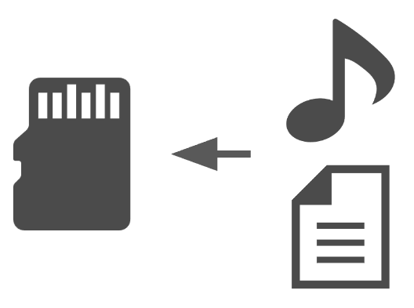

Caption Cap
字幕を表示する帽子。

CaptionCapは、あなたの視界の片隅に字幕を表示します。
音声データと字幕データを用意すれば、
音声再生位置に同期して字幕を表示します。
視聴中、あなたの両手はフリー。あなたの作業の邪魔をしません。
音声・字幕データを準備しよう。
音声データはMP3、字幕データはWebVTT形式に対応しています。 字幕データの生成にはwhisperを利用するのが便利です。

データをセット。
CaptionCapはmicroSDカードからのデータの読み取りに対応しています。 音声データと字幕データを同じフォルダに格納することで、CaptionCapから読み取ることができます。
使い方はあなた次第。
メニュー画面にはmicroSDカードに格納されているデータ一覧が表示されます。 付属のボタンで操作して、再生したいデータを選択しましょう。